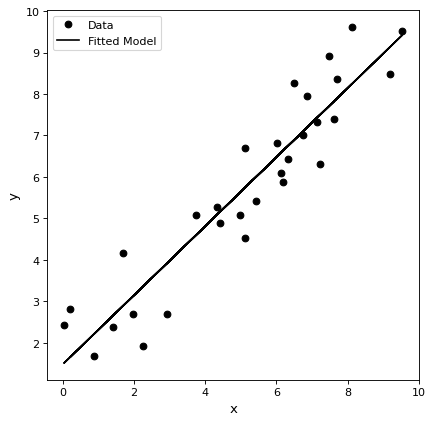

Models and Fitting (astropy.modeling)¶
Introduction¶
astropy.modeling provides a framework for representing models and performing
model evaluation and fitting. A number of predefined 1-D and 2-D models are
provided and the capability for custom, user defined models is supported.
Different fitting algorithms can be used with any model. For those fitters
with the capabilities fitting can be done using uncertainties, parameters with
bounds, and priors.
A Simple Example¶
This simple example illustrates defining a model, calculating values based on input x values, and using fitting data with a model.
import numpy as np import matplotlib.pyplot as plt from astropy.modeling import models, fitting # define a model for a line line_orig = models.Linear1D(slope=1.0, intercept=0.5) # generate x, y data non-uniformly spaced in x # add noise to y measurements npts = 30 np.random.seed(10) x = np.random.uniform(0.0, 10.0, npts) y = line_orig(x) y += np.random.normal(0.0, 1.5, npts) # initialize a linear fitter fit = fitting.LinearLSQFitter() # initialize a linear model line_init = models.Linear1D() # fit the data with the fitter fitted_line = fit(line_init, x, y) # plot the model plt.figure() plt.plot(x, y, 'ko', label='Data') plt.plot(x, fitted_line(x), 'k-', label='Fitted Model') plt.xlabel('x') plt.ylabel('y') plt.legend()
{kind=link}
{kind=link}
Advanced Topics¶
Pre-Defined Models¶
Some of the pre-defined models are listed and illustrated.